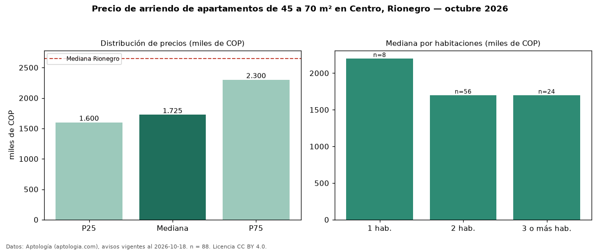

Precio de arriendo de apartamentos de 45 a 70 m² en Centro, Rionegro — octubre 2026
En Centro, Rionegro, la mediana de canon mensual de apartamentos de 45 a 70 m² es COP 1,73 millones, según 88 avisos vigentes. Frente a la mediana de todos los apartamentos en arriendo de Centro (COP 2,30 millones, n = 153), queda 25 % por debajo; este segmento reúne el 58 % de esos avisos. Por metro cuadrado, la mediana es COP 33.673/m² al mes (n = 88), 4 % por debajo del conjunto de referencia (COP 34.965/m²). El área mediana anunciada es 55 m². El segmento con más oferta es el de 2 habitaciones (56 avisos, mediana COP 1,70 millones); pasar de 1 habitación a 3 o más habitaciones cambia la mediana −23 %. El estrato más frecuente es 4 (53 % de los avisos con estrato). La mediana de todos los apartamentos en arriendo de Rionegro es COP 2,65 millones (−35 % de diferencia). 95 % de los avisos con el dato declara parqueadero. Datos: Aptología (aptologia.com), CC BY 4.0 — https://www.aptologia.com/arriendo/rionegro. Archivos: PDF, CSV con las cifras y gráfica PNG.

| Avisos únicos | 88 |
|---|---|
| Percentil 25 | COP 1.600.000 |
| Mediana | COP 1.725.000 |
| Percentil 75 | COP 2.300.000 |
| Mediana por m² | COP 33.673 |
Fuente: avisos vigentes de portales inmobiliarios recopilados por Aptología, deduplicados (mínimo 30 avisos únicos por celda). Precios pedidos, no cerrados. Fecha: 2026-10-18.